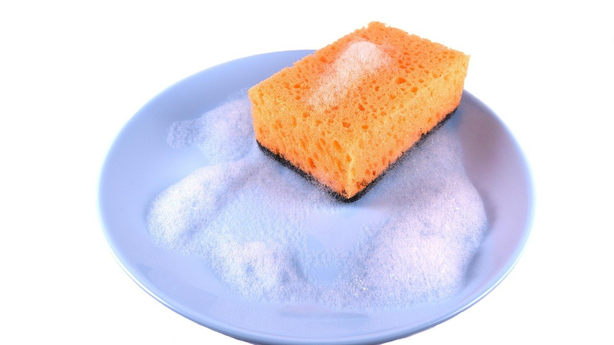

Как вывести жирное пятно с одежды в домашних условиях: 5 шагов без химчистки
Как вывести жирное пятно с одежды, если капля масла попала на любимую кофту за ужином? Первое желание: потереть салфеткой и сразу под горячую воду. Именно так пятно и становится вечным.
Жир не растворяется в воде, он только расползается по ткани и уходит глубже в волокна. Поэтому сначала его нужно вытянуть, потом растворить, и только потом стирать. У нас семья любит мясо, сковорода шкворчит почти каждый вечер, так что этот порядок я знаю наизусть.
Салфетка, а не мочалка
Когда пятно трут, жир размазывается в широкий круг и вдавливается в ткань. Маленькая капля превращается в пятно размером с монету.
Что делать: сразу промокнуть пятно сухой бумажной салфеткой, прижимая её, а не растирая.
Салфетку меняют несколько раз, пока на ней остаётся жир. Двигаться лучше от краёв к центру, тогда пятно не растёт.
Если капля попала на одежду в гостях или в кафе, хватит щепотки соли из солонки прямо на пятно. Она начнёт тянуть жир, пока вы доберётесь до дома, и дома пятно будет уже намного слабее.
Крахмал как губка
Свежий жир ещё не успел впитаться, и его можно буквально вытянуть из ткани. Для этого нужен порошок, который впитывает масло лучше самой ткани.
Что делать: густо присыпать пятно крахмалом, мелкой солью или детской присыпкой и оставить на 20–30 минут.
Потом порошок стряхивают и смотрят. Если пятно ещё заметно, присыпают ещё раз. Этот шаг особенно выручает с куртками и пальто, которые не постираешь каждую неделю.
Средство для посуды, которое знает своё дело
Средство для мытья посуды придумано именно для жира: оно отмывает сковороду, справится и с футболкой. Для одежды это самый простой и мягкий способ.
Что делать: капнуть на пятно немного средства для посуды, втереть пальцами и оставить на 15–30 минут, потом прополоскать тёплой водой.

Для джинсов и плотных тканей можно пройтись старой зубной щёткой. Деликатные ткани только аккуратно промокают пальцами, чтобы не вытянуть нитки. На светлых вещах лучше брать прозрачное средство без красителя.
Горячая батарея после стирки
Самая обидная ошибка случается в конце. Вещь постирали, повесили сушиться на батарею, а пятно никуда не делось и от тепла словно запеклось. После этого вывести его намного труднее.
Что делать: после стирки проверить мокрую вещь при дневном свете и сушить её только тогда, когда пятна уже не видно.
Мокрая ткань темнее, поэтому смотреть лучше у окна, а не под лампой. Если след остался, шаг со средством для посуды повторяют ещё раз, и только потом вещь отправляется сушиться.
Старое пятно, которое заметили поздно
Бывает, что пятно находится через неделю, когда вещь достали из шкафа. Засохший жир твердеет, и одним средством для посуды его уже не взять.
Что делать: смягчить старое пятно каплей глицерина или растительного масла на полчаса, потом обработать средством для посуды.
Звучит странно, но масло растворяет засохший жир, и пятно снова становится «свежим». После этого оно отстирывается почти так же легко. Любое средство сначала стоит проверить на шве изнутри: так видно, не меняется ли цвет ткани.
Три вещи, которые я держу под рукой
Пачку крахмала прямо на кухне, а не в дальнем шкафу.
Бутылочку прозрачного средства для посуды рядом с раковиной в ванной.
Старую зубную щётку, которая уже не годится для зубов, но отлично чистит ткань.
Вместе они занимают одну полку и спасают и школьную кофту дочки, и скатерть после праздничного ужина.
А вы чем выводите жирные пятна: средством для посуды, мылом или чем-то своим?